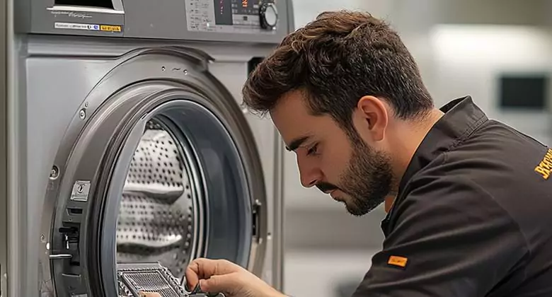

Kitchen and laundry appliance service
Refrigerator Repair in the Indianapolis Area
Diagnosis and repair for refrigerators that are warm, leaking, noisy, frosting over or having ice maker and dispenser problems. Appointments are available in Carmel, Fishers, Westfield, Noblesville, McCordsville and Zionsville.
- $89 service call
- Fee waived with completed repair
- 12-month parts and labor warranty
Problems we diagnose
Common refrigerator symptoms
A visible symptom identifies the place to begin. Model-specific testing determines whether the cause is a component, installation condition or utility connection.
Not cooling evenly
Temperature problems may involve airflow, evaporator frost, sensors, fans, controls or the sealed system.
Water under the unit
Drain restrictions, tubing, valves, filters and defrost water paths are checked before parts are recommended.
Ice maker not producing
The water supply, inlet valve, temperature, fill path and ice maker controls must work together.
Heavy frost buildup
A defrost heater, sensor, control or door-seal problem can allow ice to block the evaporator.
Fan or vibration noise
Condenser and evaporator fans, ice contact and loose panels can create different types of noise.
Food freezing or warming
Air dampers, thermistors, controls and blocked vents can shift temperatures between compartments.

Diagnosis before parts
A repair recommendation based on testing
We review the reported symptom, inspect the appliance and test the systems related to the failure. The result and estimate are explained before a repair is approved.
- evaporator and condenser fans
- defrost heaters and sensors
- water inlet valves and tubing
- ice makers and dispensers
- thermistors and controls
- door switches and gaskets
Safety note: Move food to safe cold storage if temperatures rise. Water near an electrical appliance should be addressed promptly.
A clear service visit
From booking to final test
- Share the detailsProvide the brand, model, symptom, error code and service address.
- Inspect and testThe technician checks the appliance and conditions connected to the failure.
- Review the estimateYou receive an explanation and repair option before work continues.
- Repair and verifyApproved work is completed and tested under applicable operating conditions.
Detailed service guide
When your fridge stops working, time is everything. You know that sinking feeling when you open your refrigerator and realize the milk is warm, or worse, you come home to spoiled groceries because the unit failed while you were away. At Alex Appliance Repair, we understand that refrigerator repair is urgent because you are dealing with food waste, stress, and the question of whether to repair or replace the appliance.
Our technicians provide professional refrigerator repair services for cooling problems, compressor issues, ice maker failures, water leaks, strange noises, and other fridge breakdowns. We work on all major brands, use quality parts, and back repairs with a 12-month warranty.
What We Actually See in Broken Fridges
Over the years, we have learned that refrigerator problems follow predictable patterns. Every unit is different, but these issues come up constantly:
- The compressor is getting old. The compressor is the heart of your refrigerator. It circulates refrigerant through the system to keep everything cold. After years of use, it may run constantly, cycle too often, or stop cooling altogether.
- The ice maker becomes a headache. Built-in ice makers can fail because of worn water inlet valves, frozen supply lines, clogged filters, mineral buildup, or ice blockages. Many ice maker repairs are straightforward once the real cause is found.
- Water is pooling under the fridge. A blocked drain line, frozen drainage path, or failed pump can lead to leaks. Fast refrigerator leak repair helps prevent floor and subfloor damage.
- Strange noises keep you awake. Grinding, squealing, clicking, buzzing, or vibration can point to an evaporator fan, condenser coil, compressor, or leveling problem. The sound itself often helps us diagnose the failure.
Our Approach to Your Refrigerator Problem
We do not show up and start replacing parts without a reason. A proper refrigerator repair starts with diagnosis and a clear explanation.
- We listen first. We ask whether the fridge is not cooling, leaking, making noise, freezing food, or running constantly. These details help narrow down the problem.
- We inspect the unit. We check door seals, frost buildup, condenser coils, airflow, water lines, and the overall condition of the refrigerator.
- We run diagnostics. We test the compressor, measure temperatures, check voltage, and evaluate key components before recommending a repair.
- We explain the findings. You get plain-English answers about what failed, why it happened, and whether repair or replacement makes more sense.
- We repair and test. After approval, we install quality parts and test the refrigerator before we leave.
Why Customers Call Alex Appliance Repair Again
People do not call us back because we are the cheapest. They call us because we are reliable, clear, and responsible with their home appliances.
- We show up when we say we will.
- We explain refrigerator problems without confusing technical jargon.
- We stand behind our work with a 12-month warranty.
- We care about whether the repair actually solves the problem.
Should You Repair or Replace Your Refrigerator?
The right answer depends on the age of the unit, the repair cost, and its recent repair history. If your refrigerator is less than 7 years old and the repair costs less than 40% of a replacement, repair usually makes sense. If it is more than 10 years old or has needed several repairs in the last 18 months, replacement may be the smarter choice.
We will never pressure you into a repair you do not need. If replacement is the better financial decision, we will say so.
Real Refrigerator Repair Situations We Handle
We have helped families save groceries after sudden cooling failures, repaired faulty compressors, cleared frozen water lines, replaced clogged filters, and stopped leaks before water damage spread. Sometimes the repair is complex. Other times, what feels like a complete refrigerator failure turns out to be a simple blocked line or failing component.
Refrigerator Brands We Service
Our technicians work on Whirlpool, LG, Samsung, GE, Electrolux, Frigidaire, Kenmore, Maytag, Bosch, Sub-Zero, Viking, and other major refrigerator brands. Each brand has its own design and common failure points, and hands-on experience matters when diagnosing cooling systems, controls, fans, compressors, and ice makers.
What Happens After the Repair
After service, you receive a written record of what was repaired, what parts were used, and your warranty information. We are also happy to answer maintenance questions about cleaning coils, not overstuffing shelves, keeping proper temperatures, and protecting the appliance from unnecessary strain.
Get Refrigerator Repair Help Now
Refrigerators do not break on convenient schedules, so Alex Appliance Repair is available 24/7. We can usually provide same-day or next-day service depending on your location and schedule.
Your food spoiling is nobody's idea of a good time. Call (463) 248-8429 or contact Alex Appliance Repair to schedule expert refrigerator repair. We will be honest about what it will cost and what it will take to fix it.
Local service routes
Choose your city for local refrigerator repair
Each city page contains route, ZIP code and local scheduling information for this appliance category.
Frequently asked questions
Refrigerator Repair questions
Why is my refrigerator running but not cooling?
Running sound does not confirm proper airflow or heat transfer. Fans, frost, sensors, compressor operation and the sealed system may need testing.
Can a refrigerator leak be repaired?
Many leaks come from a blocked defrost drain, valve, filter connection or water line. The source should be identified before replacing parts.
Do you repair ice makers?
Yes. Ice maker service can include diagnosis of the ice maker, inlet valve, fill tube, temperature and dispenser controls.
Should I unplug a warm refrigerator?
If there is burning odor, sparking or water at electrical components, disconnect power if it is safe. Otherwise keep the doors closed and arrange diagnosis.
Schedule refrigerator repair
Include the model number and current symptom when possible.